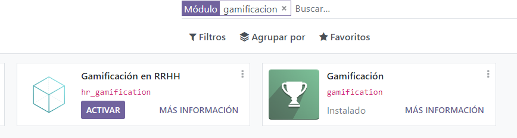
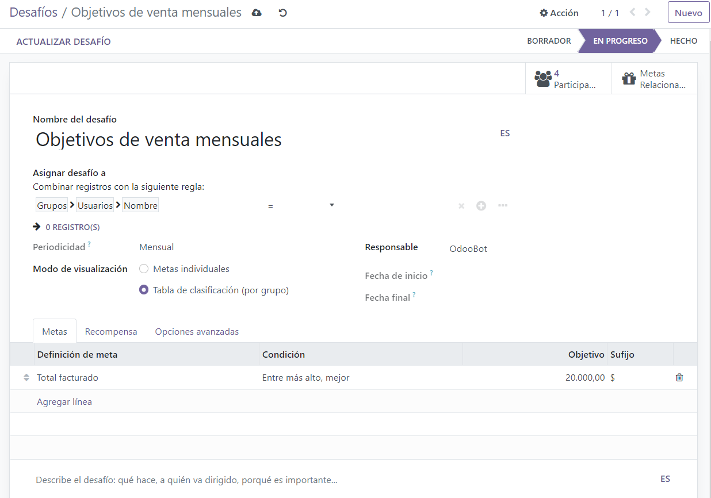
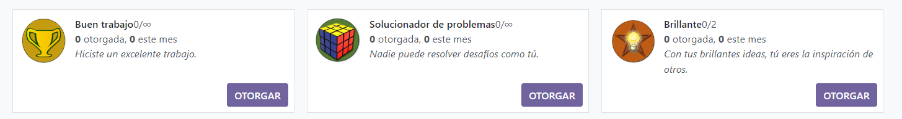

¿Cómo motivar y recompensar a mis vendedores?¶
Una excelente manera de reforzar los buenos hábitos y mejorar la productividad de su equipo de ventas es retar a sus empleados para alcanzar objetivos específicos. El módulo de gamificación le ofrece maneras creativas y simples de motivar y evaluar a sus empleados. También tendrán reconocimientos en tiempo real e insignias mediante mecánicas de juego.
Configuración¶
Instale el módulo de Gamificación, o Gamificación CRM, ya que agregan más información útil (metas y desafíos) que se pueden usar en CRM o Ventas.
Cree un reto¶
Ahora, cree su primer reto, vaya a .
Nota
Ya que la herramienta de gamificación es una configuración técnica que solo tiene que realizar una vez, debe activar las funciones técnicas para acceder a la configuración. Para hacerlo, vaya a Ajustes y Activar modo de desarrollador.
Un reto es una misión que le envía a su equipo de ventas. Puede incluir una o varias metas que se deben llevar a cabo durante un periodo específico de tiempo. Así puede configurar su reto:
asigne a los vendedores a los que retará,
asigne a un responsable,
configure la periodicidad así como la fecha de inicio y final,
seleccione sus objetivos, y
configure sus premios (insignias).
Nota
Las insignias se otorgan cuando se termina el reto. Esto sucede ya sea al final del periodo en marcha (por ejemplo, al final del mes para un reto mensual), en la fecha final del reto (si no se configura un periodo), o cuando el reto se cierra manualmente.
En el ejemplo de abajo, estamos retando a 2 empleados con una Meta mensual de ventas. El reto se basa en 2 objetivos: la cantidad total facturada y los leads nuevos generados. Al final del mes el ganador obtendrá una insignia.
Configure los objetivos¶
Nota
Los objetivos también pueden incluir la configuración de su base de datos (por ejemplo, establecer los datos de la empresa y una zona horaria, crear nuevos usuarios, etc.).
Configure recompensas¶
Se pueden dar insignias a los usuarios para logros no numéricos. Desde un simple gracias hasta un maravilloso logro, una insignia es una gran manera de expresar gratitud por un trabajo bien hecho. Para crear y otorgar insignias a sus empleados según su rendimiento vaya a .
